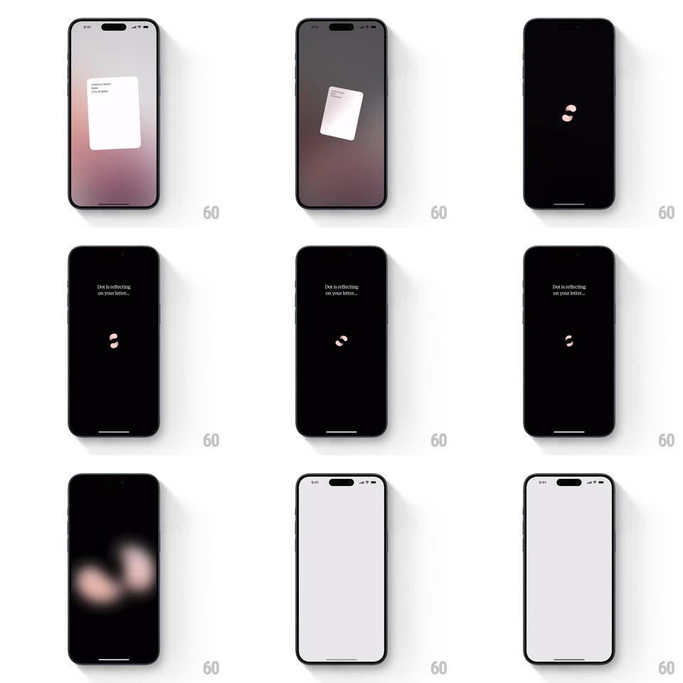

Media
Frame-by-frame

Rebuild this animation 1:1: Dot's onboarding handoff - the letter card shrinks, rotates, and vanishes as the screen sinks to black, where two pills orbit each other while "Dot is reflecting on your letter..."

Rebuild this animation 1:1: Dot's onboarding handoff - the letter card shrinks, rotates, and vanishes as the screen sinks to black, where two pills orbit each other while "Dot is reflecting on your letter..."
## Integration
Integration: stack-agnostic spec - springs given as stiffness/damping, timed motions as duration + curve; map every value to your framework and animation library of choice.
## Scene
The final onboarding page ("One more thing", a white letter card over a pink gradient background, "Start your journey" button). On commit, the card shrinks away, the screen goes black, and a loading state shows two small rounded pills rotating around a shared center under the caption "Dot is reflecting on your letter...", before fading to the next (light) screen.
## Motion spec
Pattern: shrink-away transition + orbiting-pill loader.
- Exit (0-600ms): the letter card scales 1 to 0.1 while rotating 15deg and drifting up-right (500ms, ease-in), fading out in the last 150ms; simultaneously the pink gradient darkens to black (600ms) and the title/button fade first (250ms).
- Loader (600ms+): two pills (one cream, one dusty pink, ~24x10px) orbit a shared center 180deg apart (1 revolution per 1.4s, linear) while each also tumbles (rotating to stay tangent to the orbit); they periodically pass close, stretching slightly toward each other (scaleX 1 to 1.15 at closest approach).
- The caption "Dot is reflecting on your letter..." fades in 200ms after the loader starts and idles with a soft opacity pulse (0.7 to 1, 1.8s).
- Exit: pills spiral inward to a point (400ms, accelerating) and the whole screen crossfades to the light next screen (400ms).
## Calibration
- The orbit is hypnotic, not frantic: keep revolutions >= 1.2s.
- The two pills are never identical in color - the pairing is the brand mark.
## Reduced motion
Card fades out; loader is two static pills with a pulsing caption.
## Don't miss
- The card's rotation during shrink gives the exit its personality - a straight scale-down is wrong.
- Background goes fully black for the reflecting state; the pink is gone.